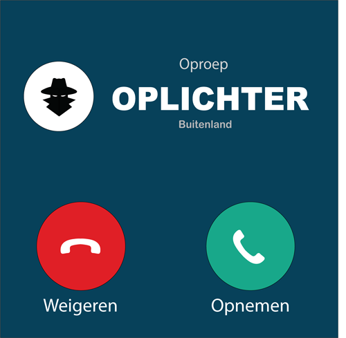
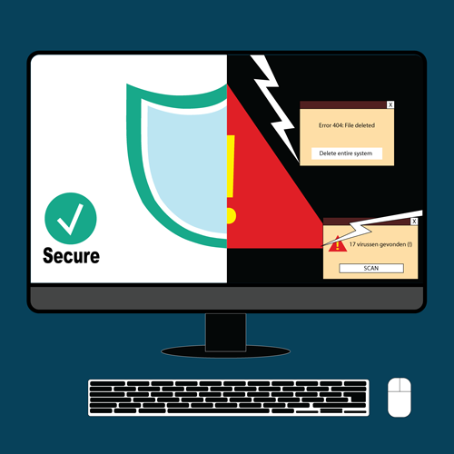
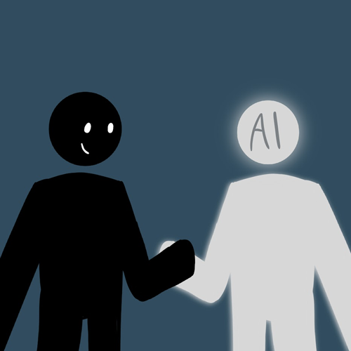
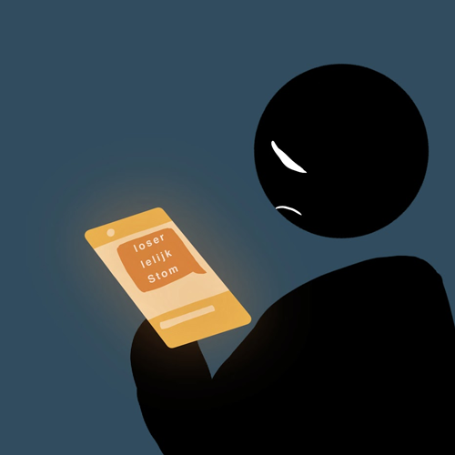
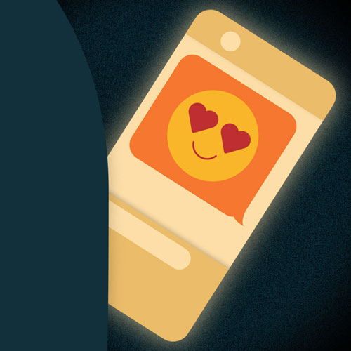
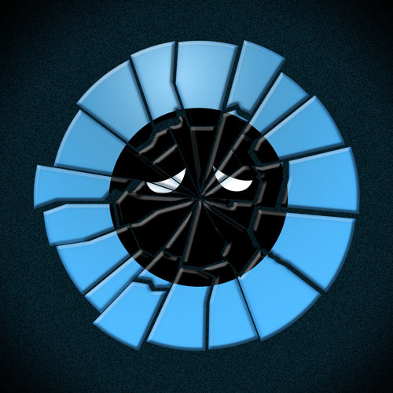

Alle afleveringen
Bekijk hier alle afleveringen!
-

Scammers en oplichters; hoe moet ik ze herkennen?! Aflevering 6
Het internet is een broedplaats voor oplichters. Van je gemiddelde marktplaats oplichter tot hele callcenters in India. In deze aflevering bespreken wij hoe je oplichters kan herkennen en gaan we diep in op de methodes die oplichters gebruiken. Lees meer
Beluister aflevering -

Hoe vermijd ik een virus op mijn computer? Aflevering 5
Het is makkelijker dan je denkt een virus te maken. Dat betekent dat je goed moet opletten op wat een virus kan zijn. Lees meer
Beluister aflevering -

Neemt AI de wereld over? Aflevering 4
In deze aflevering bespreken wij het ontstaan van AI, wat het precies is en wat voor invloed het heeft in onze samenleving. Te gast is prof. dr. Claes de Vreese, hij is hoogleraar Artificial Intelligence and Society. Hij bespreekt jullie vragen; Heb ik straks nog wel werk? Hoe zit het met mijn privacy? Lees meer
Beluister aflevering -

CTRL+ALT+DELETE Cyberpesten Aflevering 3
Haatcomments, nepaccounts, roddelkanalen en wraakporno, allemaal voorbeelden van cyberpesten. Thijs heeft in 2017 zelfmoord gepleegd als gevolg van cyberpesten, hij deelt met ons zijn verhaal en een belangrijke boodschap. Lees meer
Beluister aflevering -

"Because I'm a creep, I'm a weirdo" Aflevering 2
Heb je ooit de show "To Catch a Predator" van Dateline NBC gezien? Zeker een aanrader! In deze aflevering worden situaties belicht waarin pedofielen of andere engerds het internet misbruiken om zich ongepast te gedragen. De enige echte Chris Hansen zit erbij en verteld over zijn jarenlange ervaring met creeps op het internet. Lees meer
Beluister aflevering -

Hoe social media jouw ideaalbeeld beïnvloedt Aflevering 1
Sinds social media bestaat vergelijken vooral meiden zichzelf met anderen. Dit maakt hun onzeker. Wij gaan jou overtuigen dat jij leuk ben zoals je nu bent! Lees meer
Beluister aflevering